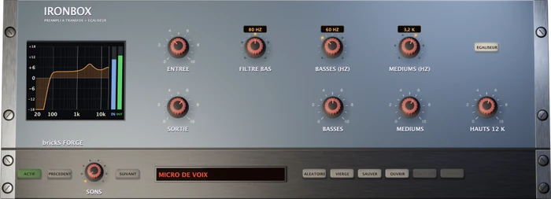
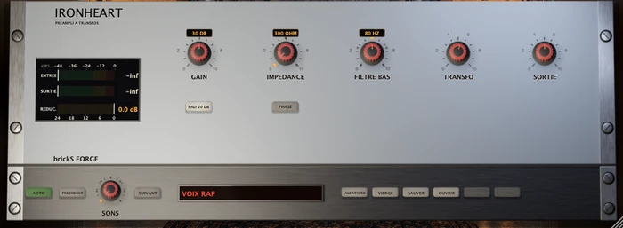

Le catalogue
Les 8 plug-ins : préamplis

IRONBOXPréampli de micro et égaliseur à transformateursPréamplis AMBERPréampli à tubes de studioPréamplis
AMBERPréampli à tubes de studioPréamplis BRASSPréampli d'enregistrement · trois couleursPréamplis
BRASSPréampli d'enregistrement · trois couleursPréamplis CRYSTALPréampli transparentPréamplis
CRYSTALPréampli transparentPréamplis EMBERPréampli à tubes d'époquePréamplis
EMBERPréampli à tubes d'époquePréamplis GRITPréampli saturé · lo-fiPréamplis
GRITPréampli saturé · lo-fiPréamplis
IRONHEARTPréampli de console britanniquePréamplis SLEDGEPréampli à circuit discretPréamplis
SLEDGEPréampli à circuit discretPréamplis